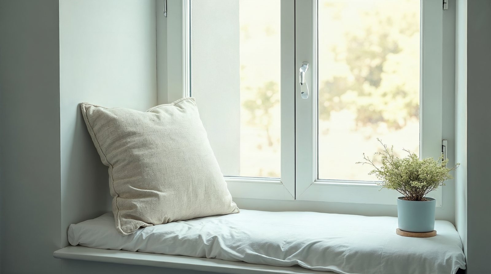
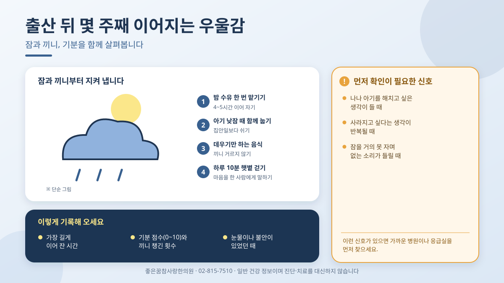

이종호 한의사 감수좋은꿈참사랑한의원 대표원장 (한의사 면허번호 19769)발행 2026-11-26 · 수정 2026-11-26
이 글의 차례
새벽 세 시, 아기는 겨우 잠들었는데 정작 나는 잠이 오지 않습니다. 작은 숨소리에도 벌떡 일어나 아기 코 밑에 손을 대 봅니다. 낮에는 이유 없이 눈물이 나고, 남들은 다 잘하는 것 같은데 나만 엄마 자격이 없는 것 같습니다. 행복해야 할 때라는데, 마음은 자꾸 아래로 내려갑니다.
출산 뒤에 마음이 흔들리는 것은 드문 일이 아닙니다. 출산 직후 며칠은 많은 산모가 눈물이 나고 예민해지는 시기를 겪습니다. 그런데 그 마음이 2주를 넘어 계속되거나 점점 깊어진다면, 산후 우울로 보고 조금 더 세심하게 살펴야 합니다.
저는 진료실에서 이 이야기를 꺼내기까지 오래 망설이신 분을 많이 뵙습니다. "제가 약해서 그런 거겠죠" 하고 고개를 숙이시면 늘 같은 말씀을 드립니다. 몸이 아이를 품고 내보내는 큰일을 치렀고, 잠도 제대로 못 잤습니다. 마음이 흔들리는 것은 의지의 문제가 아니라 몸과 마음이 함께 지친 신호입니다.
왜 출산 뒤에 마음이 흔들릴까요
출산 직후에는 임신 동안 높았던 여성호르몬이 짧은 사이에 크게 떨어집니다. 이 급격한 변화가 기분과 잠, 불안에 영향을 준다고 알려져 있습니다. 갑상선 기능이 출산 뒤 일시적으로 흔들리는 경우도 있어 피로와 기분 변화가 함께 오기도 합니다.
잠은 가장 큰 몫을 합니다. 두세 시간마다 깨는 밤이 몇 주씩 이어지면, 누구라도 판단이 흐려지고 감정이 예민해집니다. 수면이 쪼개진 것만으로도 우울과 불안이 커질 수 있다는 것은 여러 연구에서 이야기되어 왔습니다.
몸의 회복도 함께 갑니다. 출혈로 빈혈이 생겼거나, 제왕절개 상처나 회음부 통증, 손목과 허리 통증이 남아 있으면 하루하루가 더 버겁습니다. 몸이 아프면 마음이 가라앉고, 마음이 가라앉으면 몸의 통증이 더 크게 느껴집니다.
수유도 몸에 적지 않은 부담입니다. 모유 수유는 밤에도 몇 번씩 깨야 하고, 잘 안 될 때는 그것만으로도 죄책감이 커지기 쉽습니다. 모유든 분유든 아기와 엄마가 함께 버틸 수 있는 방법이 좋은 방법이라고 저는 말씀드립니다.
생활의 변화도 큽니다. 일을 쉬게 되고, 친구를 만나기 어렵고, 하루 대부분을 아기와 둘이 보냅니다. 주변의 기대와 '좋은 엄마'에 대한 부담, 예전과 달라진 몸에 대한 낯섦이 겹치기도 합니다. 예전에 우울이나 불안을 겪은 적이 있다면 이 시기에 다시 흔들리기 쉽다고 알려져 있습니다.
한의학에서는 출산 뒤 기혈(氣血)이 많이 소모된 상태에서 잠을 못 자고 마음을 졸이면, 가슴이 두근거리고 쉽게 놀라며 잠이 얕아지는 모습이 나타난다고 보아 왔습니다. 몸을 채우는 일과 마음을 쉬게 하는 일을 함께 살핀다는 뜻입니다.
산후 기분 저하와 산후 우울, 이렇게 나눠 봅니다
출산 뒤 며칠의 기분 저하
출산 뒤 며칠 사이에 이유 없이 눈물이 나고, 예민하며, 불안해지는 일은 많은 산모가 겪습니다. 흔히 '산후 우울감' 또는 '베이비 블루스'라고 부르며, 대개 2주 안에 저절로 가라앉는 경우가 많습니다. 이 시기에는 쉬고, 먹고, 도움을 받는 것이 가장 중요합니다.
2주를 넘어 이어지는 산후 우울
마음이 가라앉는 날이 2주 넘게 이어지고, 예전에 즐겁던 일에 흥미가 사라지며, 잠과 식욕이 크게 달라지고, 스스로를 탓하는 생각이 깊어진다면 산후 우울로 보고 진료를 받으셔야 합니다. 출산 직후뿐 아니라 몇 달 뒤에 시작되는 경우도 있습니다.
불안이 앞서는 경우
우울보다 불안이 더 큰 분도 많습니다. 아기에게 무슨 일이 생길까 봐 잠을 못 자고, 같은 확인을 몇 번씩 되풀이하며, 가슴이 두근거리고 숨이 답답합니다. 이것도 산후에 흔히 오는 마음의 변화로, 우울과 똑같이 살펴야 합니다.
몸의 피로와는 이렇게 다릅니다
산후에는 누구나 피곤합니다. 그래서 피로와 우울을 구분하기 어렵다는 말씀을 많이 듣습니다. 하나의 단서는 '쉴 기회가 생겼을 때'입니다. 누가 아기를 봐 주어 잠잘 시간이 생겼는데도 잠이 오지 않거나, 쉬어도 마음이 전혀 가벼워지지 않는다면 피로만은 아닐 수 있습니다.
빈혈이나 갑상선 기능 변화도 피로와 기분 저하를 만들 수 있습니다. 그래서 산부인과 산후 검진에서 혈액 검사를 받으셨는지 여쭙고, 필요하면 검사를 먼저 권합니다. 몸의 원인을 확인하는 일과 마음을 돌보는 일은 함께 갈 수 있습니다.
마음보다 몸이 먼저 말하기도 합니다
산후 우울은 꼭 슬픔으로만 오지 않습니다. 진료실에서는 "기분은 괜찮은데 몸이 이상해요"라는 말로 시작되는 경우가 꽤 많습니다. 가슴이 답답하고, 머리가 무겁고, 손발이 저리며, 밥을 먹어도 체한 것처럼 얹혀 있다고 하십니다.
이유를 알 수 없는 땀과 두근거림, 목에 무언가 걸린 듯한 느낌, 온몸이 쑤시는 느낌도 자주 듣는 표현입니다. 몸의 증상은 그것대로 살피되, 그 밑에 마음의 피로가 깔려 있지는 않은지 저는 함께 여쭙습니다.
반대로 마음이 너무 무거워 몸의 변화를 놓치는 분도 있습니다. 출산 뒤 출혈과 상처, 열감, 다리 붓기 같은 몸의 변화는 마음과 별개로 산부인과 산후 검진 때 꼭 함께 말씀해 주세요. 그래서 저는 마음과 몸을 한 장의 그림으로 놓고 이야기를 듣습니다.

회복은 곧은 길이 아닙니다
산후 우울에서 회복되는 길은 대개 오르락내리락합니다. 며칠 괜찮다가 다시 가라앉는 날이 오면 "역시 안 되는구나" 하고 실망하기 쉽습니다. 그런 날도 회복의 한 부분이라고 생각해 주세요.
저는 하루하루의 기분보다 몇 주의 흐름을 보자고 말씀드립니다. 지난달보다 이어 자는 시간이 조금 늘었는지, 끼니를 챙긴 날이 늘었는지, 웃은 날이 하루라도 있었는지를 함께 짚어 봅니다.
아빠와 가족의 마음도 함께
출산 뒤에는 아빠도 잠이 부족하고 부담이 커집니다. 아빠에게도 우울과 불안이 찾아올 수 있다고 알려져 있습니다. 둘 다 지쳐 있으면 서로에게 날이 서기 쉬워서, 한 사람의 마음만이 아니라 집 전체의 쉼을 함께 살피는 것이 좋습니다.
양가 부모님이나 산후 도우미, 지역 보건소의 산모 지원 같은 도움을 미리 알아 두시면 힘든 주를 버티는 데 보탬이 됩니다. 도움을 받는 것이 미안해서 혼자 하려는 분이 많은데, 지금은 도움을 받아도 되는 때입니다.
스스로 점검해 보세요
아래 가운데 해당하는 줄이 많다면 혼자 견디지 마시고 진료를 받아 보세요. 점수를 매기려는 목록은 아닙니다.
- 2주 넘게 거의 매일 마음이 가라앉아 있다
- 예전에 좋아하던 일에 관심이 사라졌다
- 아기가 자는 동안에도 잠이 오지 않는다
- 입맛이 크게 줄었거나 반대로 먹는 것으로 버틴다
- 내가 엄마로서 부족하다는 생각이 계속 든다
- 이유 없이 불안하고 가슴이 두근거린다
- 아기를 돌보는 일이 버겁고 멀게 느껴진다
진료실에 오시기 어려울 때
갓난아기를 두고 집 밖에 나오는 일 자체가 큰 산처럼 느껴질 수 있습니다. 그럴 때는 가족이 먼저 와서 이야기를 전해 주셔도 괜찮고, 전화로 오실 수 있는 시간을 상의하셔도 됩니다. 아기와 함께 오시면 수유하거나 기저귀를 갈 시간도 넉넉히 두겠습니다.
진료실에 오는 것만으로도 오늘 할 일을 다 하셨다고 생각해 주세요. 거창한 준비 없이 지금 모습 그대로 오셔도 충분합니다.
먼저 이렇게 여쭙니다
진료실에서는 대략 이런 순서로 여쭙습니다. 대답하기 어려운 질문은 건너뛰셔도 괜찮습니다.
- 출산은 언제 하셨고, 자연분만이었나요, 제왕절개였나요?
- 하루에 가장 길게 이어 자는 시간은 몇 시간인가요?
- 수유는 모유, 분유, 혼합 가운데 어떻게 하고 계신가요?
- 밥은 하루 몇 끼, 언제 드시나요?
- 아기를 함께 돌봐 줄 사람이 있나요?
- 산후 검진에서 빈혈이나 갑상선 검사를 받으셨나요?
- 정신건강의학과 상담이나 약 처방을 받고 계신가요?
- 예전에 우울이나 불안으로 힘드셨던 적이 있나요?
수유 여부는 꼭 여쭙습니다. 수유 중에는 한약과 다른 약을 정할 때 더 신중해야 하기 때문입니다. 함께 돌봐 줄 사람을 여쭙는 것도 같은 이유입니다. 산후 우울은 혼자 짊어진 무게가 클수록 깊어지기 쉬워서, 그 무게를 나눌 길부터 같이 찾아봅니다.
일상에서 먼저 해 볼 수 있는 것
지금 할 수 있는 일은 크지 않아도 됩니다. 아래에서 오늘 하나만 골라 보세요.
- 하루 한 번은 4~5시간을 이어 잘 수 있도록 밤 수유 한 번을 가족에게 맡기기
- 아기가 낮잠을 잘 때 집안일보다 함께 눕기
- 밥은 차려 먹지 못해도 데우기만 하면 되는 음식으로 끼니 거르지 않기
- 하루 10분이라도 햇볕을 쬐며 집 밖을 걷기
- 마음이 어떤지 한 사람에게라도 말로 꺼내 보기
- 육아 정보 검색과 다른 엄마들의 사진 보기를 잠시 줄이기
가족께도 부탁드리고 싶은 것이 있습니다. "힘내"보다 "내가 아기 볼게, 좀 자"가 훨씬 큰 도움이 됩니다. 산모가 잠을 이어 잘 수 있는 시간을 지켜 주는 것, 끼니를 챙겨 주는 것, 이야기를 끝까지 들어 주는 것이 산후 우울을 돌보는 첫걸음입니다.
먹는 것도 마음과 이어져 있습니다. 산후에는 미역국만 몇 주씩 드시는 분도 있는데, 밥과 함께 고기·생선·달걀·두부 같은 단백질과 채소를 고루 챙기시면 기운을 되찾는 데 보탬이 됩니다. 철분이 든 음식은 빈혈이 있는 분께 특히 신경 써 드리라고 말씀드립니다.
몸을 조금씩 움직이는 것도 좋습니다. 산부인과에서 괜찮다고 한 범위 안에서 유모차를 밀고 동네를 한 바퀴 걷거나, 누워서 천천히 숨을 고르며 팔다리를 펴 보세요. 몸이 조금 풀리면 마음도 따라 숨 쉴 틈이 생기는 분이 많습니다.
산후조리는 정해진 규칙을 지키는 일이 아니라, 몸과 마음이 회복할 틈을 만드는 일이라고 생각해 주세요. 예전 방식대로 해야 한다는 부담이 오히려 마음을 누르고 있다면, 할 수 있는 만큼만 하셔도 충분합니다.
몸의 회복 전반은 출산 뒤 몸 회복, 관절·땀·잠·기분은 무엇부터 살피나요?에 따로 정리해 두었습니다. 이 글은 마음이 가라앉는 쪽에 무게를 두었습니다.
작은 것 하나를 해낸 날은 스스로 알아봐 주세요. 샤워를 한 날, 밥을 앉아서 먹은 날, 햇볕을 쬔 날도 회복의 한 걸음입니다. 해내지 못한 것보다 해낸 것을 세어 보는 연습이 마음을 조금 가볍게 합니다.
한의원에서 함께 살필 수 있는 경우
산후 우울은 정신건강의학과 진료가 중심입니다. 기분이 많이 가라앉았거나 일상이 어렵다면 먼저 정신건강의학과 상담을 받으시고, 한의원 진료는 그와 나란히 몸의 회복을 돕는 쪽으로 함께하실 수 있습니다.
- 산후에 잠이 얕고, 작은 소리에도 깨며 다시 잠들기 어려운 경우
- 땀이 많고, 쉽게 놀라며, 가슴이 자주 두근거리는 경우
- 입맛이 없고 소화가 약해져 끼니를 자주 거르는 경우
- 관절이 시리고 몸이 무거워 하루가 더 버거운 경우
좋은꿈참사랑한의원에 오시면 맥을 짚고 잠과 식사, 땀, 몸의 온도, 통증을 함께 여쭙습니다. 그 이야기를 바탕으로 침, 한약 상담, 생활 관리 가운데 지금 몸에 맞는 방법을 상의합니다.
수유 중이시거나 정신건강의학과 약을 드시고 있다면 모두 알려 주세요. 처방받은 약은 처방한 의사와 상의 없이 줄이거나 끊지 않으시도록 안내합니다. 한약을 상의할 때도 그 약과 수유를 먼저 고려해 신중하게 정합니다.
이렇게 기록해 오시면 상담이 쉬워집니다
산후에는 하루하루가 비슷해서, 진료실에 앉으면 지난주가 잘 떠오르지 않습니다. 일주일만 아래처럼 짧게 적어 보세요.
- 하루 중 가장 길게 이어 잔 시간
- 끼니를 챙긴 횟수
- 기분을 0~10점으로 매긴다면 몇 점인지
- 눈물이 나거나 불안했던 때와 그때 있었던 일
- 땀, 두근거림, 관절 통증이 있었던 날
- 도움을 받은 일과 혼자 버틴 일
기록은 잘 쓰려고 하지 않으셔도 됩니다. 휴대폰 메모에 '3시간, 두 끼, 4점'처럼 숫자만 남겨도 충분합니다. 한 줄도 적기 어려운 날이 있어도 괜찮습니다. 그런 날이 며칠이었는지도 소중한 기록입니다. 가족이 대신 적어 주셔도 됩니다.
산후의 마음은 혼자 버티라고 있는 것이 아닙니다. 도움을 청하는 것은 약해서가 아니라 아기와 나를 함께 지키는 일입니다. 다음에 오시면 지난 며칠 가장 길게 주무신 시간부터 여쭙겠습니다.
이런 증상은 먼저 확인이 필요합니다
- 나나 아기를 해치고 싶은 생각이 들거나, 사라지고 싶다는 생각이 반복되는 경우
- 잠을 거의 못 자면서 없는 소리가 들리거나 현실과 다른 생각에 사로잡히는 경우
이런 신호가 있으면 한의원보다 가까운 병원이나 응급실을 먼저 찾으세요. 마음이 급할 때는 자살예방상담전화 ☎ 109에서 언제든 이야기를 들어 줍니다.
함께 읽으면 좋은 글
- 출산 뒤 몸 회복, 관절·땀·잠·기분은 무엇부터 살피나요?
- 출산 뒤 마음이 가라앉고 눈물이 날 때는 어떻게 살피나요?
- 기분이 2주 넘게 가라앉고 잠·입맛·흥미가 떨어질 때는 어떻게 살피나요?
- 잠이 잘 오지 않을 때 한의원에서는 무엇을 먼저 살피나요?

여쭙는 것
- 출산은 언제 하셨고, 자연분만이었나요, 제왕절개였나요?
- 하루에 가장 길게 이어 자는 시간은 몇 시간인가요?
- 수유는 모유, 분유, 혼합 가운데 어떻게 하고 계신가요?
생활에서 해 볼 것
- 하루 한 번은 4~5시간을 이어 잘 수 있도록 밤 수유 한 번을 가족에게 맡기기
- 아기가 낮잠을 잘 때 집안일보다 함께 눕기
- 밥은 차려 먹지 못해도 데우기만 하면 되는 음식으로 끼니 거르지 않기
한의원에서 함께 살필 것
- 산후에 잠이 얕고, 작은 소리에도 깨며 다시 잠들기 어려운 경우
- 땀이 많고, 쉽게 놀라며, 가슴이 자주 두근거리는 경우
- 입맛이 없고 소화가 약해져 끼니를 자주 거르는 경우
먼저 확인이 필요한 신호
- 나나 아기를 해치고 싶은 생각이 들거나, 사라지고 싶다는 생각이 반복되는 경우
- 잠을 거의 못 자면서 없는 소리가 들리거나 현실과 다른 생각에 사로잡히는 경우
한눈에 보는 표
| 구분 | 핵심 |
|---|---|
| 여쭙는 것 | 출산은 언제 하셨고, 자연분만이었나요, 제왕절개였나요? 하루에 가장 길게 이어 자는 시간은 몇 시간인가요? |
| 생활에서 해 볼 것 | 하루 한 번은 4~5시간을 이어 잘 수 있도록 밤 수유 한 번을 가족에게 맡기기 아기가 낮잠을 잘 때 집안일보다 함께 눕기 |
| 한의원에서 함께 살필 것 | 산후에 잠이 얕고, 작은 소리에도 깨며 다시 잠들기 어려운 경우 땀이 많고, 쉽게 놀라며, 가슴이 자주 두근거리는 경우 |
| 먼저 확인이 필요한 신호 | 나나 아기를 해치고 싶은 생각이 들거나, 사라지고 싶다는 생각이 반복되는 경우 잠을 거의 못 자면서 없는 소리가 들리거나 현실과 다른 생각에 사로잡히는 경우 |
자주 묻는 질문
출산 뒤 눈물이 나는 건 다들 겪는 일 아닌가요?
출산 뒤 며칠의 기분 저하는 많은 분이 겪고 대개 2주 안에 가라앉습니다. 다만 2주를 넘겨 이어지거나 점점 깊어진다면 산후 우울로 보고 진료를 받아 보시길 권합니다.
모유 수유 중인데 한약을 먹어도 되나요?
수유 중이라는 것을 먼저 알려 주시면 그에 맞춰 신중하게 정합니다. 수유 중에는 드실 수 있는 약과 양을 더 꼼꼼히 확인합니다.
정신건강의학과 약을 먹고 있는데 한의원 진료를 같이 받아도 되나요?
함께 받으실 수 있습니다. 드시는 약을 모두 알려 주시고, 그 약은 처방한 의사와 상의 없이 줄이거나 끊지 마세요.
출산하고 몇 달이 지났는데도 산후 우울일 수 있나요?
산후 우울은 출산 직후뿐 아니라 몇 달 뒤에 시작되기도 합니다. 시기와 상관없이 마음이 2주 넘게 가라앉아 있다면 상담을 받아 보세요.
가족은 무엇을 도와주면 좋을까요?
산모가 하루 한 번은 이어 잘 수 있도록 밤 돌봄을 나눠 주시고, 끼니를 챙기며 이야기를 끝까지 들어 주세요. 기분이 계속 가라앉아 보이면 진료를 함께 알아봐 주시는 것도 큰 도움이 됩니다.
좋은꿈참사랑한의원은 재진 때 지난번 이야기부터 이어서 여쭙니다. 진료시간과 예약은 오시는 길에서 확인하세요.
어디서 상담받을 수 있나요?
좋은꿈참사랑한의원은 서울 동작구 만양로2길 2 신성빌딩 3층·5층(서울 동작구 상도동, 7호선 상도역 3번 출구 근처)에 있습니다. 한의사 3명(이종호 대표원장, 조영기 수석진료원장, 정원영 진료원장)이 진료합니다. 진료시간은 평일 09:30~20:00(점심 13:00~14:00), 토·일·공휴일 09:30~15:00이며, 방문 전 전화로 확인을 권합니다. 예약은 네이버 예약, 카카오톡 상담, 전화 02-815-7510로 받습니다.
이 글은 일반적인 건강 정보이며 개인의 진단이나 치료를 대신하지 않습니다. 증상이 있거나 복용 중인 약이 있다면 진료를 통해 확인하세요. 치료 효과는 개인마다 다를 수 있습니다.
작성 기준: 일반적으로 알려져 있는 건강 정보를 참고해 정리했습니다(대표원장 감수). 증상 기록은 1~2주 동안 하루 1회, 비슷한 시간에 적어 오시면 지난 상태와 비교하기 쉽습니다.